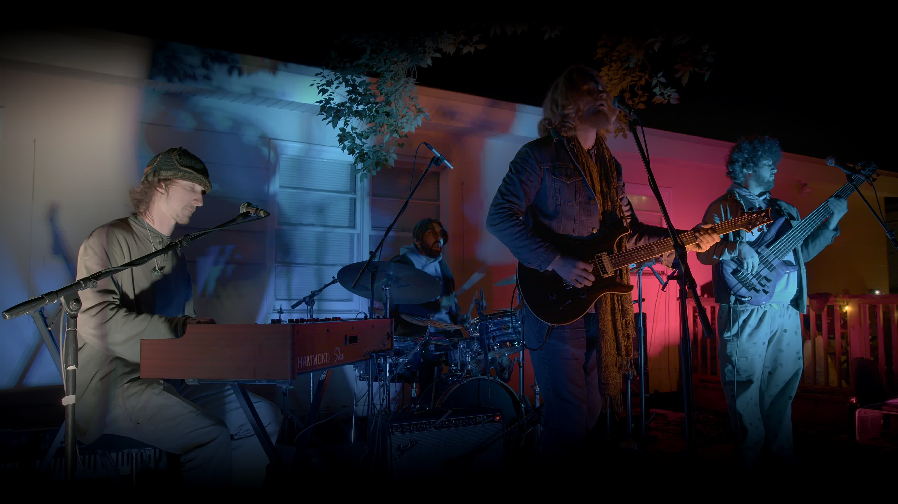

Rock and roll jamband Strictly Liquid is a blossoming group from Florida whose original music speaks to the spirit of exploration. Drawing inspiration from the likes of Phish, Grateful Dead, The Allman Brothers, The Beatles, and Pink Floyd, you’ll find that their sound is the culmination of Psych-Rock, Blues, Jazz, Funk, and a touch of Americana. From the touching melodies of “Halfway” to the cascading peaks of “Crow” their twists and turns showcase as broad a spectrum as that of human emotion. They make it a goal to connect with the audience uniquely every performance.
The band formed in 2021 brothers Luke and Jesse Valcich met Joey Remillard in Tallahassee, FL, all bonding over shared music and spiritual experience. After a year of shows with six rotating drummers, the band solidified its final member JC Hannon, reaching new heights in chemistry both on and off stage.
Joey and JC nurtured much of their musical development through participation in their local School of Rock, which familiarized the rhythm section with a wide range of artists spanning across multiple genres and decades. Participation in this program throughout their adolescence allowed Joey and JC to accumulate hundreds of hours of live performance experience. Joey also studied under jam band bassist extraordinaires Marc Brownstein and Oteil Burbridge. They ensure the groove’s never lacking, but what never fails to impress is that both play just as prominent a role in the harmony as they do in the rhythm.
The Valcich brothers grew up in Orlando, FL playing music together with their whole family throughout their lives. Music is woven deep into their family’s culture and hearts.
Strictly Liquid, from Tallahassee, FL, is an ever-evolving psychedelic experience seeking to explore the core of their musical influences in rock, funk, and jazz through original songs and improvised spaces that ebb and flow with heart and soul. Luke Valcich (keys, vocals), Jesse Valcich (guitar, vocals), Joey Remillard (bass, vocals), and JC Hannon (drums, vocals) seek an eclectic musical experience that speaks to the heart of the psychedelic rock movement and honors their jam band inspirations.